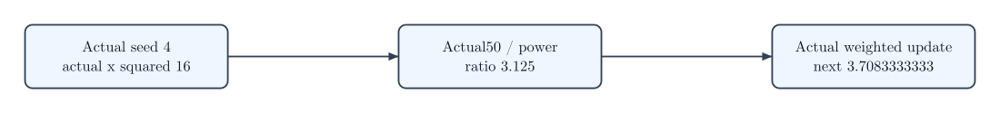
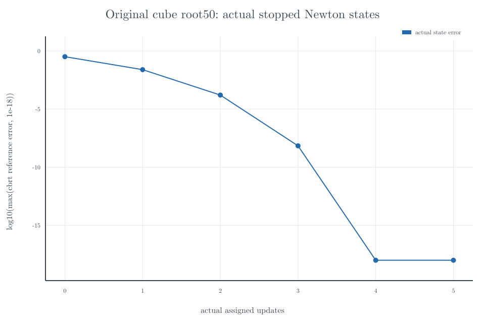
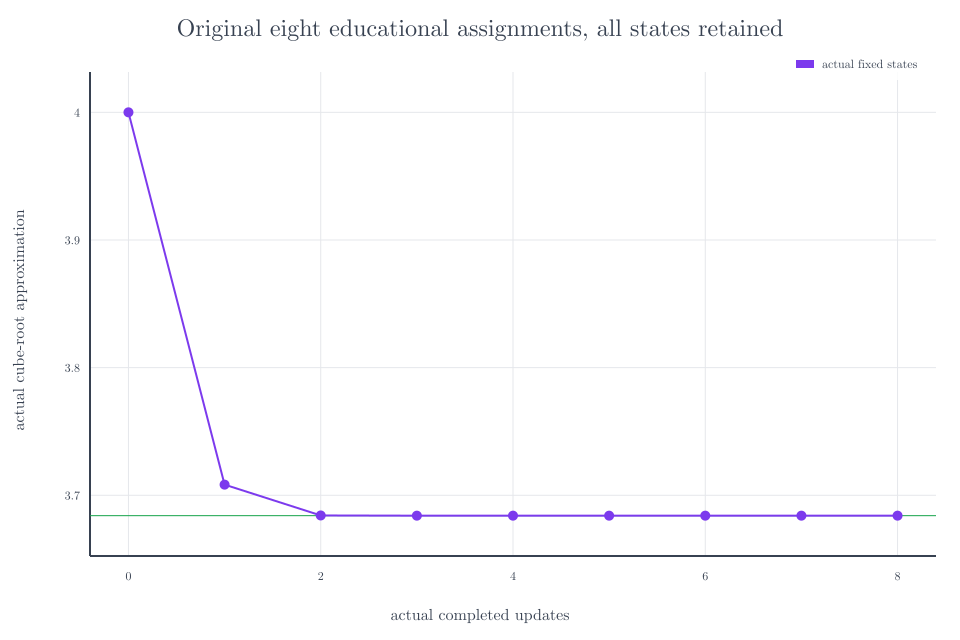
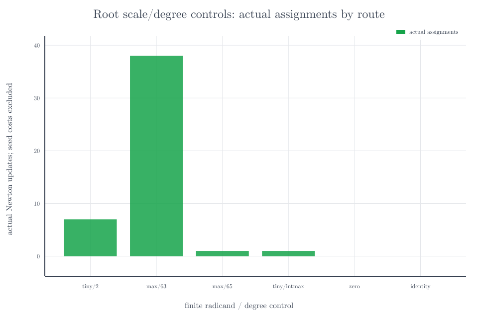

Integer-degree roots with Newton refinement
Abstract
Approximate the principal nonnegative nth root with observable native Newton updates. A hand-checkable cube-root step leads into the original known-root checks and a50/n3 convergence diagnostic. Full-exponent and large-degree controls explain the corrected initialization and arithmetic routes, while the report distinguishes a small state change from a certified root error.
Derive the update, then state its limits
For f(x)=xⁿ−a and positive x, Newton’s tangent update simplifies to x_next=((n−1)x+a/x^(n−1))/n. For a>0 and fixed n, the principal root is simple; sufficiently near it, the leading error is(n−1)e²/(2r), giving local quadratic convergence until rounding dominates. Degree1 is the exact identity. Nonnegative zero has a direct zero shortcut for degrees above one. This API deliberately rejects negative radicands, including odd-degree cases, rather than silently extending a different branch convention.
The implementation’s default stopping test compares consecutive states, abs(next−before)<=10⁻¹⁵·abs(next), with at most100 updates. That is a numerical termination rule, not a residual, correct-rounding or root-error certificate. Trace metadata reports whether it passed; a deliberately exhausted budget returns its finite current state with converged=false.
One actual cube-root step for50
The original a=50,n=3 binary-exponent seed is4. Its actual power x² is16, ratio50/16 is3.125 and next state(8+3.125)/3 is89/24. The first native record supplies every value in the diagram. There is no report-side power/update simulation.
#include <dm/dm.hpp>
int main() {
std::filesystem::create_directories("build");
auto t = dm::algorithms::nth_root_trace(50, 3);
auto s = t.steps.front();
dm::graphics::Diagram d;
d.node("seed", {0, 0},
std::format("Actual seed {}\nactual x squared {}", s.before, s.power));
d.node("ratio", {7, 0},
std::format("Actual50 / power\nratio {}", double(s.ratio)));
d.node("next", {14, 0},
std::format("Actual weighted update\nnext {:.10f}", s.after));
d.edge("seed", "ratio").edge("ratio", "next");
std::print("Actual first update: (2 * {} + {}) / 3 = {}.\n", s.before,
double(s.ratio), s.after);
d.save_svg("build/nth_root_tiny.svg");
}Actual first update: (2 * 4 + 3.125) / 3 = 3.7083333333333335.

Retain the original known roots
The original checks are sqrt(2), cube-root27=3, tenth-root1024=2 and cube-root1000=10. Their actual native values and update counts are computed below. The error plot belongs to the default stopped a50/n3 run and compares actual states with native cbrt(50). This is a useful library comparison, not an independent exact oracle. The plotted log10(max(error,10⁻¹⁸)) has an explicit display floor; zero printed difference does not establish a correctly rounded answer for every input.
#include <dm/dm.hpp>
int main() {
std::filesystem::create_directories("build");
std::vector<std::pair<double, int>> pairs{{2, 2}, {27, 3}, {1024, 10},
{1000, 3}};
std::vector<double> references{std::sqrt(2.), 3, 2, 10};
std::print("| original radicand | degree | actual result | comparison reference | actual updates | " "state-change accepted |\n| ---: | ---: | ---: | ---: | ---: | --- |\n");
for (std::size_t i = 0; i < pairs.size(); ++i) {
auto[a, n] = pairs[i];
auto r = dm::algorithms::nth_root_run(a, n);
std::print("| {} | {} | {} | {} | {} | {} |\n", a, n, r.value,
references[i], r.updates, r.converged);
}
auto s = dm::algorithms::nth_root_demo_study();
std::vector<double> errors;
for (double error : s.reference_errors)
errors.push_back(std::log10(std::max(error, 1e-18)));
auto p = dm::graphics::RPlot::create();
p.lines(s.indices, errors, "actual state error", {36, 105, 172}).points(
s.indices, errors, "", {36, 105, 172}, 5).title("Original cube root50: actual stopped Newton states").x_label("actual assigned updates").y_label("log10(max(cbrt reference error, 1e-18))").save_svg("build/nth_root_original.svg");
}| original radicand | degree | actual result | comparison reference | actual updates | state-change accepted |
|---|---|---|---|---|---|
| 2 | 2 | 1.414213562373095 | 1.4142135623730951 | 6 | true |
| 27 | 3 | 3 | 3 | 6 | true |
| 1024 | 10 | 2 | 2 | 12 | true |
| 1000 | 3 | 10 | 10 | 7 | true |

Retain the fixed educational update budget honestly
The old diagnostic displayed states0 through7 and executed an additional final assignment whose value was not plotted. The native fixed-budget study now retains all eight actual assignments and all nine resulting states, with early state-change acceptance disabled explicitly. Its table exposes stationary final updates rather than extending an assumed quadratic rate past floating precision. This experiment differs from the ordinary driver’s stopping policy.
The next figure displays actual states themselves. The complete errors against native cbrt are printed, including the initial seed. Every value is captured from the same canonical producer rather than a second handwritten Newton loop.
#include <dm/dm.hpp>
int main() {
std::filesystem::create_directories("build");
auto s = dm::algorithms::nth_root_demo_study({8, 0, 1000});
std::print("| actual state index | actual value | actual cbrt reference error |\n| ---: | ---: | ---: " "|\n");
for (std::size_t i = 0; i < s.values.size(); ++i)
std::print("| {} | {} | {} |\n", i, s.values[i], s.reference_errors[i]);
auto p = dm::graphics::RPlot::create();
p.lines(s.indices, s.values, "actual fixed states", {124, 58, 237}).points(
s.indices, s.values, "", {124, 58, 237}, 5).abline_h(s.reference,
{22, 163, 74}, 1).title("Original eight educational assignments, all states retained").x_label("actual completed updates").y_label("actual cube-root approximation").save_svg("build/nth_root_fixed.svg");
std::print("\nActual assignments {}; state-change acceptance disabled; status {}.\n",
s.trace.run.updates, s.trace.run.converged);
}| actual state index | actual value | actual cbrt reference error |
|---|---|---|
| 0 | 4 | 0.3159685013596132 |
| 1 | 3.7083333333333335 | 0.024301834692946667 |
| 2 | 3.684190408057344 | 0.00015890941695717586 |
| 3 | 3.684031505494495 | 6.8541083919626544e-09 |
| 4 | 3.684031498640387 | 0 |
| 5 | 3.684031498640387 | 0 |
| 6 | 3.684031498640387 | 0 |
| 7 | 3.684031498640387 | 0 |
| 8 | 3.684031498640387 | 0 |
Actual assignments 8; state-change acceptance disabled; status false.

Finite extremes and large degrees need explicit arithmetic routes
For degrees through64, the corrected seed is2ceil(e/n), where frexp gives a=m·2e. This binary upper seed avoids a huge first overshoot from a below-root start and still gives4 for50/cube-root. The original finite-double multiplication/update order is retained when safe. A subnormal/nonpositive/nonfinite attempted power or nonfinite update selects a checked long-double power/ratio fallback; actual attempted and fallback multiplications are counted.
For degree above64, iterating n−1 multiplies per step would be unreasonable for an int-sized n. That branch explicitly starts from exp(log(a)/n) in long double and computes refinement ratios through exp(log(a)−(n−1)log(x)). It is an initializer/refinement with transcendental functions, not a claim that all roots are found solely by the elementary multiply/divide loop. The control table identifies the route. Large-degree seeds are already close, so the actual update count alone cannot measure their total computational cost.
#include <dm/dm.hpp>
int main() {
std::filesystem::create_directories("build");
double tiny =
std::numeric_limits<double>::denorm_min(), large =
std::numeric_limits<double>::max();
std::vector<std::pair<double, int>> pairs{{tiny, 2}, {large, 63},
{large, 65},
{tiny,
std::numeric_limits<int>::max()},
{0, 3}, {5, 1}};
std::vector<std::string> names{"tiny/2", "max/63", "max/65", "tiny/intmax",
"zero", "identity"};
std::vector<double> updates;
std::print("| control | actual result | log-derived seed | actual updates | actual power multiplies | " "widened updates | log-ratio updates | accepted/shortcut |\n| --- | ---: | --- | ---: | ---: " "| ---: | ---: | --- |\n");
for (std::size_t i = 0; i < pairs.size(); ++i) {
auto[a, n] = pairs[i];
auto r = dm::algorithms::nth_root_run(a, n);
updates.push_back(r.updates);
std::print("| {} | {} | {} | {} | {} | {} | {} | {} |\n", names[i],
r.value, r.log_seed, r.updates, r.power_multiplications,
r.widened_updates, r.log_ratio_updates, r.converged);
}
auto p = dm::graphics::RPlot::barplot(updates, names, "actual assignments");
p.title("Root scale/degree controls: actual assignments by route").x_label(
"finite radicand / degree control").y_label("actual Newton updates; seed costs excluded").save_svg("build/nth_root_controls.svg");
}| control | actual result | log-derived seed | actual updates | actual power multiplies | widened updates | log-ratio updates | accepted/shortcut |
|---|---|---|---|---|---|---|---|
| tiny/2 | 2.2227587494850775e-162 | false | 7 | 7 | 0 | 0 | true |
| max/63 | 78150.54176107043 | false | 38 | 3658 | 21 | 0 | true |
| max/65 | 55256.10132549508 | true | 1 | 0 | 0 | 1 | true |
| tiny/intmax | 0.9999996533431377 | true | 1 | 0 | 0 | 1 | true |
| zero | 0 | false | 0 | 0 | 0 | 0 | true |
| identity | 5 | false | 0 | 0 | 0 | 0 | true |

Complete controls, cost and interpretation
Finite a>=0, positive degree, finite nonnegative relative tolerance and nonnegative update budget below INT_MAX are checked before arithmetic. Nonfinite or nonpositive produced seeds/ratios/states throw rather than propagating unchecked infinities or NaNs. Identity and zero shortcuts are exact mathematical cases; an exhausted approximate run remains explicitly unaccepted.
For I updates and degree through64, work is O(In), counting both attempted and widened power-loop products. The large-degree branch uses O(I) log/exp evaluations whose cost is not equated with multiplication. Ordinary driver storage is constant. An owned trace retains four logical input controls and one fixed record per actual update, default1000000, zero disabling; online admission precedes each update. Metadata flags identify placeholders and arithmetic routes, and no partial trace is returned on failure.
The Newton derivation and actual fixed-budget/default runs distinguish local error reduction, numerical termination and representability guards. Full-domain empirical/reference checks support the exercised cases without turning the state-change threshold into a universal root-error or correct-rounding certificate.
Verification
This ten-report batch passes75 CTest cases,22 directly instrumented ASan/UBSan
cases,122 compiled and executed public examples,538/538 scoped documentation
definitions and ten representative clangd hovers. Independent Python
arbitrary-precision arithmetic verifies69365 captured division records
with656460 checks; native independent polynomial, geometry, finite-range, graph,
ranking and callback checks cover the remaining producers. Frozen valid-input
comparisons preserve Neville recurrences, Newton result/callback paths, complete
byte encodings, switch routes and NSGA-II complete objective-call
sequences/final fronts. Ten checkout headers and ten byte-identical installed
development headers compile independently; an installed-header native consumer
links and runs. All40 complete programs execute, and40 native figures have been
visually reviewed; HTML/Markdown exports preserve computed rows/prose and
identical image bytes. Checks are scoped native checks, not an installation
claim for every language binding. Receipts:
build/mepml-conversion/batch-254-263/.